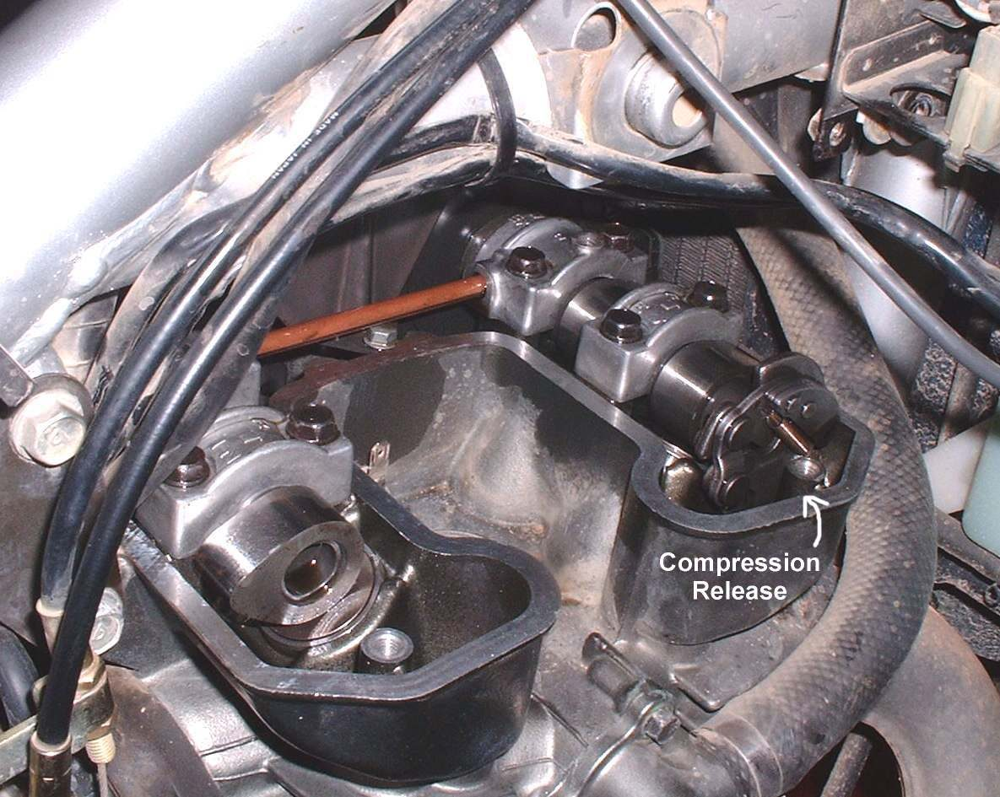

A compression release lets the engine turn over more easily by letting some pressure out of the cylinder while it is being started. It is common on larger single cylinder and off-road engines and helps both kickstart and electric start.
What it does
On a four-stroke it lifts the exhaust valve a little, never the intake. Venting into the exhaust is safe, while venting into the intake would send hot, explosive gas back toward the carburettor. Several designs are used: a handlebar lever and cable, a cam on the kickstarter that pulls a cable, a lever on the head, or a spring and centrifugal weight on the camshaft that opens the valve while cranking and releases at engine speed.
Signs it is worn or failing
- A very hard kick with no help from the release.
- Hard starting or poor running, with a burnt exhaust valve, because a cable with no free play keeps the exhaust valve slightly open.
- A stuck lever or cable, or a cable that has stretched so the valve is barely lifted.
When to replace it
Replace a frayed or stuck cable and a worn lever. Automatic units on the camshaft are replaced when the weight or spring is stuck or worn.
What to match when buying
- Say whether it is lever, kickstart-cam or automatic. Match the engine code.
- A cable must match the length and the end fittings on both sides.
- Aftermarket kits for engines with none may need holes cut in the head. This is a workshop job.
Fitting notes
- Check the cable has a little free play when relaxed. The course gives about one to three millimetres. Use the value in your bike's manual. See Check a compression release.
- A release vents hot gas. Do not use it hot where it can spray paint or skin.
- Some engines show a cam mark in a window so the piston can be set on compression before a kick.